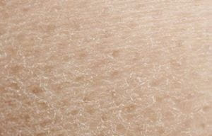

"Normal" es un término utilizado ampliamente para referirse a la piel bien equilibrada. El término científico para la piel sana es eudérmica.
"Seca" se utiliza para describir un tipo de piel que produce menos sebo que la piel normal. Como consecuencia de la falta de sebo, la piel seca carece de los lípidos que necesita para retener humedad y formar un escudo protector frente a influencias externas.
"Grasa" se utiliza para describir un tipo de piel con producción acrecentada de sebo. La hiperproducción se conoce como seborrea.
| texto 1 | texto 2 | texto 3 |
| covid | virus | corona |